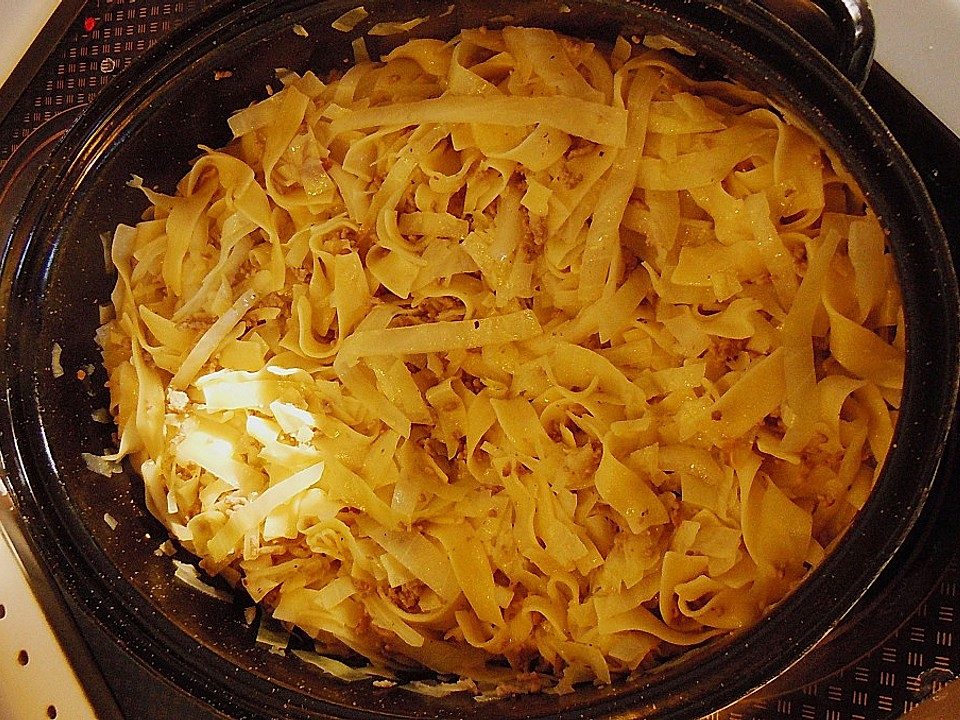

- Cabbage
- Butter
- "Flecken Pasta"
- salt, pepper, optional sugar
- Love
- Cut cabbage add salt and knead it. Preheat oven to 180 degrees Celsius.
- Put it in a baking dish, add butter and bake it for around 20 minutes.
- Cook "Flecken Pasta" in salted water until done. Add cabbage and spice it up with salt and pepper or optional sugar
Return to main page